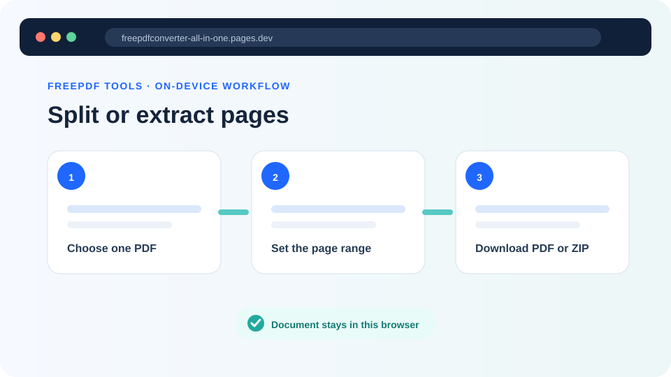
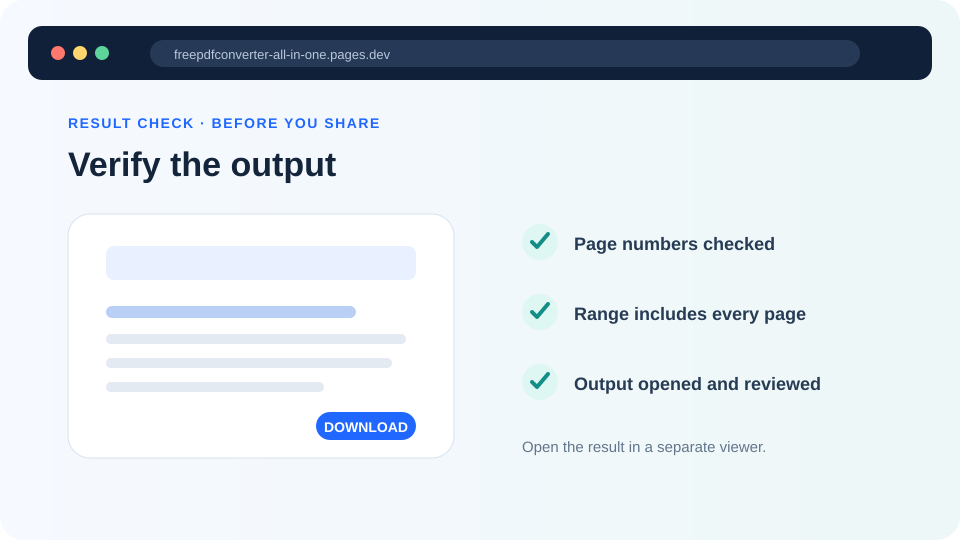

How to split a PDF or extract selected pages
Create one smaller PDF from a page range, or turn every page into its own PDF inside a ZIP download.
Updated August 11, 2026 · By FreePDF Tools · 5 minute read


Split PDF versus extract pages
Extracting a range creates one new PDF containing consecutive pages. For example, extracting pages 12–18 from a 60-page report produces one seven-page file. Splitting all pages creates a separate one-page PDF for every original page and packages the results in one ZIP file.
| Need | Choose | Output |
|---|---|---|
| Share a chapter, appendix or selected section | Extract range | One PDF containing the chosen consecutive pages |
| Process invoices or forms one page at a time | Split all | One numbered PDF per page inside a ZIP |
| Save only page 7 | Extract range with From 7 and To 7 | One single-page PDF |
How to extract a page range
- Open the Split PDF tool and select the source PDF.
- Wait for the detected page count to appear.
- Enter the first required page in From page and the last required page in To page.
- Select Extract range.
- Open the downloaded PDF and confirm its first and final pages.
The tool extracts one continuous range. If you need non-consecutive pages such as 2, 7 and 15, extract each page separately and then use the Merge PDF tool to combine those outputs in the required order.
How to split every PDF page
After loading the PDF, choose Split all to ZIP. Each page becomes a numbered one-page PDF. The ZIP keeps the results together and avoids asking the browser to approve dozens of separate automatic downloads.
Choose pages from your PDF
Extract one range or split every page without uploading the source file to our server.
Why printed page numbers may not match
The page number printed inside a document can differ from its actual PDF position. A report may have an unnumbered cover, a contents page labelled with Roman numerals and then a page visibly marked “1.” The tool uses the PDF's physical page order, beginning with the first visible page in the file.
Open the document in a PDF reader and compare its page-position indicator with the printed page label before entering a range. Checking both endpoints prevents accidentally sharing a page above or below the intended section.
Common problems and fixes
| Problem | What to check |
|---|---|
| “Enter a valid page range” | From must be at least 1, To cannot exceed the detected page count, and From cannot be greater than To. |
| The wrong content was extracted | Compare the PDF's page position with the page number printed inside the document. |
| The PDF cannot be opened | It may be encrypted, malformed or incomplete. Verify it in a trusted reader, then use Unlock PDF with the known password when authorized. |
| The ZIP does not open | Let the download finish completely, then use the operating system's Extract or Unzip function. |
| Forms, bookmarks or signatures differ | The output is a newly created PDF. Keep the original when advanced document features or digital signatures matter. |
Privacy and safe handling
Selected PDFs are read and copied locally by browser code. They are not uploaded to our application server for splitting. Nevertheless, save the results in an appropriate location, remove temporary downloads from shared devices, and retain the original until every output has been checked.